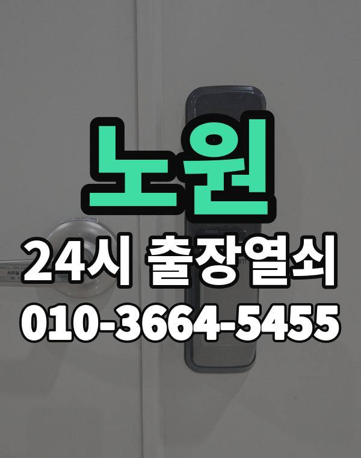

노원은 이런 곳입니다
노원구는 상계동, 중계동, 하계동에 큰 아파트 단지가 모여 있는 동네입니다.
단지와 동 번호가 많아 위치를 정확히 알려주시는 게 가장 중요합니다.

노원구 출장 가는 동네
- 상계동
- 중계동
- 하계동
- 공릉동
- 월계동
상계동 출장열쇠, 중계동 열쇠집처럼 동네 이름으로 찾으셨어도 같은 곳입니다.
적혀 있지 않은 동네도 노원구 안이면 다 갑니다.
노원에서 맡기실 수 있는 일
노원에서 전화 주실 때
학원가가 가까운 단지는 아이 혼자 집에 있다가 문이 잠기는 연락도 있습니다.
이 경우는 꼭 먼저 말씀해 주시면 서둘러 갑니다.
노원역, 상계역, 중계역, 공릉역 근처라고 말씀해 주셔도 위치 잡기가 쉬워집니다.
가까운 역이나 큰 건물, 단지 이름을 같이 알려주세요.
- 주소와 건물 이름 (아파트면 동, 호수)
- 문 종류, 번호판이 켜지는지
- 사시는 걸 확인할 신분증이나 우편물이 있는지
전화부터 작업까지 순서는 이용안내에 적어 두었습니다.
노원 출장열쇠 관련 글
- 노원 공릉동 원룸 현관 손잡이가 헐겁거나 헛돌 때 살펴볼 점검 포인트
- 노원 공릉동 원룸 열쇠를 잃어버렸거나 안에 두고 문을 잠갔을 때 순서대로 정리
- 노원구 하계동 보조키가 잠기거나 안전 걸쇠가 걸렸을 때 상황별 해결
- 노원구 하계동 열쇠집 고를 때 전화로 먼저 물어볼 다섯 가지
- 노원 하계동 현관문이 안 열릴 때 증상으로 원인을 짚어 보는 순서
- 서울 노원 중계동 결로와 장마 습기로 도어락이 말썽일 때 줄이는 생활 습관
- 노원구 중계동 한밤중 현관문이 안 열릴 때 출장열쇠에 전화하는 요령
- 노원 중계동 방문이나 화장실 문이 안에서 잠겼을 때 바깥에서 먼저 해 볼 것
- 서울 노원구 상계동 도어락 번호판이 꺼졌을 때 건전지 교체부터 비상 전원까지
- 서울 노원 상계동 아이나 반려동물만 집에 두고 문이 잠겼을 때 먼저 할 일
- 노원구 상계동 한파에 도어락 반응이 느려지거나 꺼질 때 겨울 점검법
- 서울 노원 월계동 택배 받거나 쓰레기 버리러 나왔다가 문이 잠겼다면 이렇게
- 노원구 월계동 도어락 비밀번호가 기억나지 않거나 가족이 몰래 바꿨을 때 풀어 가는 법
노원 출장열쇠 자주 묻는 질문
노원구 끝쪽 동네도 오시나요?
상계동, 중계동, 하계동, 공릉동, 월계동 등 노원구 전 지역 갑니다. 목록에 없는 동네도 전화로 위치만 알려주시면 됩니다.
노원에서 밤늦게나 새벽에도 오시나요?
시간 상관없이 출동합니다. 주소를 받으면 도착 시간부터 알려드립니다.
문을 못 열면 비용을 내나요?
못 열면 받지 않습니다. 얼마인지는 손대기 전에 먼저 말씀드립니다.
세입자도 문을 열어 주시나요?
사시는 분이 맞는지만 확인되면 됩니다. 신분증이나 우편물을 준비해 주세요.
노원 도어락 수리나 교체도 하시나요?
네, 합니다. 문에 맞는 제품인지 보고, 고칠 수 있으면 수리를 먼저 권합니다.